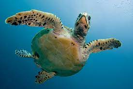

Unlike land turtles, which can retract their heads under their shells, sea turtles cannot. Large top eyelids of sea turtles shield their eyes from the environment. The external ear hole is absent in sea turtles. Sea turtles lack teeth, much like other turtles do. The form of a species' jaw varies. Every species' jaw form is customized for its eating. The skull of the turtle is distinct from all other living amniotes (which includes mammals, birds, and reptiles), being solid and hard without any spaces for the attachment of muscles (temporal fenestrae).
The most lethal bites are made by turtles that are carnivorous or durophagous (eat animals with hard shells). For instance, the biting force of the durophagous Mesoclemmys nasuta is 432 lbf.
The majority of the eastern portion of the United States is home to the perennial plant known as turtlehead. It typically grows to a height of 2 to 3 feet and can be seen growing near stream banks and moist terrain. The plant has opposing, small, toothed leaves, and a square stem.
The protective shell is one of a turtle's most distinguishing characteristics, and regardless of the species, most turtle shells are noticeably similar. Contrary to what you might think from cartoons, a turtle's shell is not detachable. It serves as the turtle's ribs and backbone all in one and is quite literally a part of the animal's body. More intriguingly, turtles are one of the few terrestrial animals in the world whose ribcage, or in this case, the shell, contains both the shoulder and hip bones. To aid with breathing, turtles also have specific muscles inside their shells. Turtles rely on these muscles to get the oxygen they need, unlike most land animals, their shells cannot expand and contract like a conventional ribcage.
Scutes are often arranged in longitudinal rows and have specific quantitative properties as well as tight bilateral symmetry. The majority of turtles still living have seven rows of scutes, five on the dorsal shell (carapace) and two on the ventral shell.
 One of a turtle's most distinctive features is its protective shell, and regardless of the species, most turtle shells are remarkably similar. Cartoons may lead you to believe otherwise, but a turtle's shell is not removable. It essentially forms a portion of the turtle's body and serves as both its ribs and its backbone. Yet another fascinating fact about turtles is that they are among the few terrestrial species in the entire animal kingdom whose ribcage, or in this case, shell, incorporates both the shoulder and hip bones. Turtles also have certain muscles inside their shells that help with breathing. Contrary to other terrestrial animals, turtles' shells cannot expand and contract like a typical ribcage, therefore, they must rely on these muscles to obtain the oxygen they require.
Sea turtles cannot retract their heads inside their shells or retract their flippers like other turtles can. They are highly nimble and graceful swimmers thanks to their streamlined shells and big paddle-shaped flippers. Their back flippers function as rudders and as steering devices in the water.
Scientific Classification of Turtles